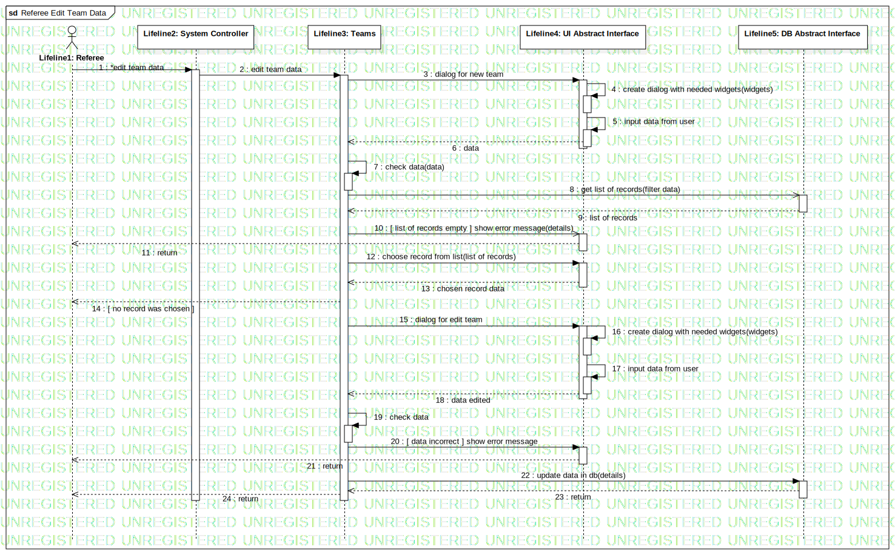

Interaction1
UMLInteraction
Untitled
::
Model1
::
Collaboration2
::
Interaction1
Description
none
Diagrams

Referee Edit Team Data
Participants
Lifeline1: Referee
Lifeline2: System Controller
Lifeline3: Teams
Lifeline4: UI Abstract Interface
Lifeline5: DB Abstract Interface
Messages
*edit team data (Lifeline1→Lifeline2)
edit team data (Lifeline2→Lifeline3)
create new dialog (Lifeline3→Lifeline4)
create dialog with needed widgets (Lifeline4→Lifeline4)
input data from user (Lifeline4→Lifeline4)
data (Lifeline4→Lifeline3)
check data (Lifeline3→Lifeline3)
get list of records (Lifeline3→Lifeline5)
list of records (Lifeline5→Lifeline3)
[ list of records empty ] show error message (Lifeline3→Lifeline4)
return (Lifeline4→Lifeline1)
choose record from list (Lifeline3→Lifeline4)
chosen record data (Lifeline4→Lifeline3)
[ no record was chosen ] (Lifeline3→Lifeline1)
create new dialog (Lifeline3→Lifeline4)
create dialog with needed widgets (Lifeline4→Lifeline4)
input data from user (Lifeline4→Lifeline4)
data edited (Lifeline4→Lifeline3)
check data (Lifeline3→Lifeline3)
[ data incorrect ] show error message (Lifeline3→Lifeline4)
return (Lifeline4→Lifeline1)
update data in db (Lifeline3→Lifeline5)
return (Lifeline5→Lifeline3)
return (Lifeline3→Lifeline1)
Properties
Name
Value
name
Interaction1
stereotype
null
visibility
public
isReentrant
true
Owned Elements
Referee Edit Team Data